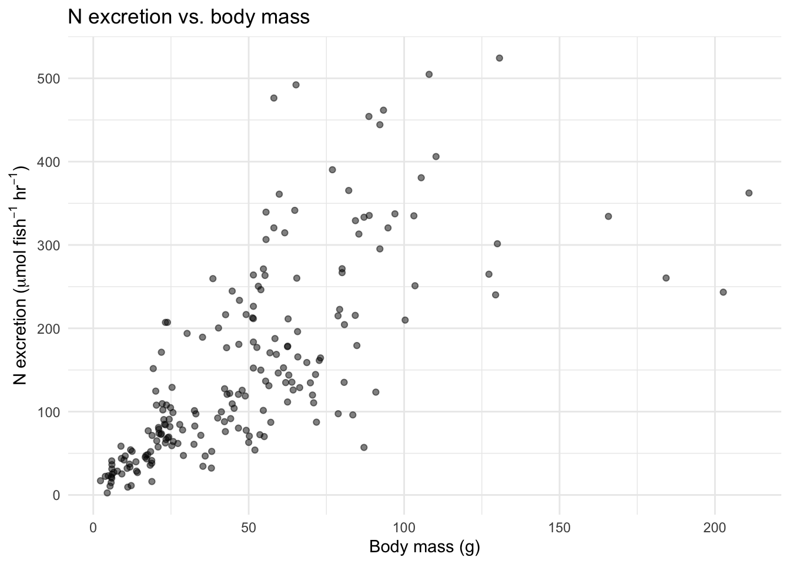
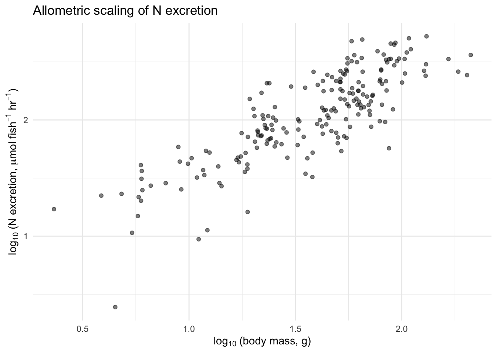
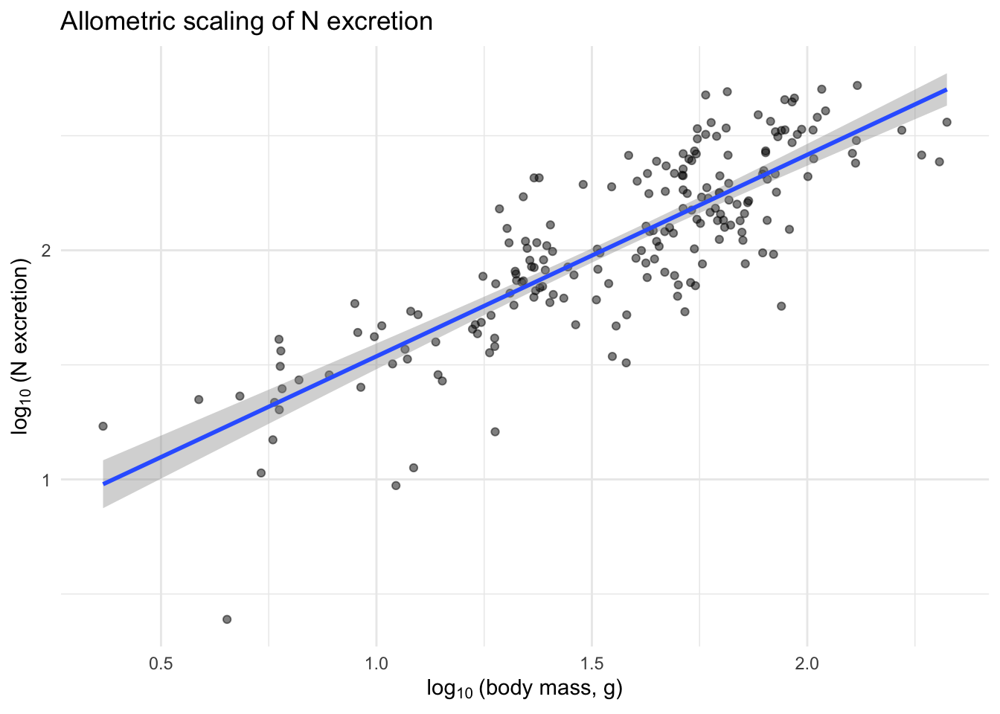
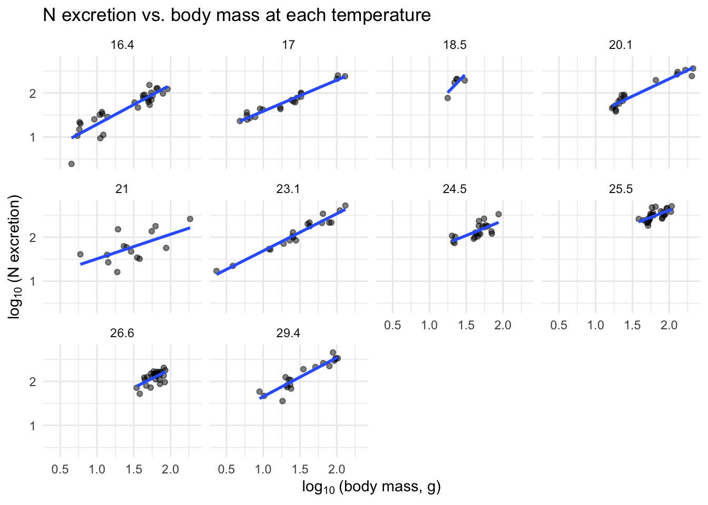

library(tidyverse)
library(broom)13 Metabolic Ecology: How do body size and temperature affect nutrient cycling?

13.1 Goals
In this chapter, you will explore how two fundamental properties of organisms—body size and temperature—control rates of nutrient cycling. Along the way, you will test specific quantitative predictions of the Metabolic Theory of Ecology (MTE), and discover how well those predictions hold up under real field conditions.
If you successfully complete this chapter, you will be able to
- explain how metabolic rates scale with body size (allometry),
- explain how metabolic rates depend on temperature (\(Q_{10}\)),
- use log-transformations to linearize power-law relationships,
- fit and interpret linear regressions in R,
- evaluate the support for specific quantitative hypotheses, and
- reason about how body size and temperature act simultaneously on a biological rate.
13.2 Preparatory steps
- General background: Read the sections below on allometry and temperature dependence. If your instructor has assigned background readings or lectures on metabolic ecology, complete those first.
- Data: go to our class data repository, and download
fish_nutrient_excretion.csv.- Put
fish_nutrient_excretion.csvin yourdatadirectory (insideRwork).
- Put
- Find out what you need for the deliverables (Section 13.7).
13.3 Background
13.3.1 Why body size and temperature matter
The metabolic rates of organisms—plants, microbes, and animals—are strongly influenced by body size and body temperature (Gillooly et al. 2001; J. H. Brown et al. 2004). Large organisms obviously have higher metabolic rates than small ones, when rates are expressed on a per individual basis. And because biochemical reactions are temperature-dependent, most metabolic rates increase with body temperature, at least up to some upper tolerance limit.
Understanding how biological rates scale with size and temperature is important for several reasons. There is enormous variation in body size among Earth’s life forms, from tiny bacteria to great whales and giant sequoia trees. Even within a single species, body size can vary dramatically. Knowledge of how rates vary with size tells us how individuals of different sizes use resources, process materials like nutrients and energy, and interact with other species. Similarly, because organisms experience a wide range of temperatures—both naturally and increasingly due to human activity—understanding temperature effects helps us predict how organisms and ecosystems may respond to environmental change.
13.3.2 Allometry: how rates scale with body size
At a constant temperature, the effect of body size on metabolic rate can be described with a simple power law:
\[B = B_0 M^b \tag{13.1}\]
where \(B\) is the organism’s metabolic rate (e.g., micromoles of nitrogen excreted per hour), \(B_0\) is a normalization constant, \(b\) is the allometric scaling exponent, and \(M\) is the organism’s body mass.
Allometric theory and extensive empirical data show that for many biological rates, the increase in metabolic rate is less than proportional to the increase in body mass. Mathematically, this means \(b < 1\), sometimes called negative allometry. The Metabolic Theory of Ecology (MTE) makes a very specific prediction: \(b = 0.75\) (West, Brown, and Enquist 1997; K. A. Brown and Gurevitch 2004; Banavar et al. 2014). This prediction arises from theory about how resource distribution networks (like circulatory systems) scale with body size.
To get a feel for why \(b < 1\) matters, consider this: an elephant (\(5 \times 10^6\) g) weighs about 500,000 times more than a mouse (10 g). If \(b = 0.75\), the elephant’s metabolic rate is only about 19,000 times greater than the mouse’s—proportionally much less than the difference in body mass. Per gram, the mouse burns hotter.
However, the prediction that \(b = 0.75\) is somewhat controversial. Some data suggest that the exponent is closer to 1.0 for many organisms (e.g., Reich et al. 2006), and others argue that \(b \approx 0.75\) only when averaged across many species but varies considerably among them (Isaac and Carbone 2010).
13.3.3 Temperature dependence and \(Q_{10}\)
MTE also incorporates the effects of temperature. Gillooly et al. (2001) showed that metabolic rate can be predicted from both body mass and body temperature:
\[B = B_0 M^b e^{-E/(kT)} \tag{13.3}\]
where \(e\) is the base of the natural logarithm, \(E\) is the activation energy of metabolic enzymes, \(k\) is Boltzmann’s constant (\(8.617 \times 10^{-5}\) eV K\(^{-1}\)), and \(T\) is temperature in Kelvin.
A simpler way to describe temperature sensitivity is \(Q_{10}\): the factor by which a rate increases when temperature rises by 10°C. If an organism’s excretion rate doubles when temperature goes from 15°C to 25°C, then \(Q_{10} = 2\). Most \(Q_{10}\) values for biological rates fall between 1.5 and 3.
You can calculate \(Q_{10}\) for any temperature interval using:
\[Q_{10} = \left(\frac{R_2}{R_1}\right)^{10/(T_2 - T_1)} \tag{13.4}\]
where \(R_1\) and \(R_2\) are the rates at temperatures \(T_1\) and \(T_2\), respectively. This formula works for any temperature interval, not just exactly 10°C.
13.3.4 Nutrient excretion by fish
Most tests of MTE have been done in the lab, where activity, temperature, and diet can be controlled and basal metabolic rate is measured. But organisms in nature are often active, experience variable temperatures, and are feeding—they display active metabolic rates. Far fewer studies have tested whether MTE predictions hold under field conditions, where diet, activity, and other factors add noise.
The data we will analyze come from field studies of nutrient excretion by gizzard shad (Dorosoma cepedianum) in three Ohio lakes (Schaus et al. 1997; Higgins, Vanni, and González 2006). Excretion rate is a type of metabolic rate: it represents the quantity of nutrient released after metabolic and structural needs are met. The excretion of nitrogen (N) and phosphorus (P) by fish is ecologically important because these nutrients, released in dissolved form that algae can readily use, can fuel a significant fraction of primary production in lakes (Vanni et al. 2006).
The data set contains 200 observations—each one an individual fish whose excretion rate was measured in the field. Fish were captured, placed in filtered lake water, and the change in dissolved N and P concentration over time was measured. The variables are:
temp_C— water temperature (°C) experienced by the fishmass_g— wet body mass (grams)N_u.h— nitrogen excretion rate (\(\mu\)mol N per fish per hour)P_u.h— phosphorus excretion rate (\(\mu\)mol P per fish per hour)
13.4 Get R ready for work
Open RStudio and load the packages we’ll need.
Now read in the data and take a look.
fish <- read.csv("data/fish_nutrient_excretion.csv", skip=8)
glimpse(fish)Rows: 200
Columns: 5
$ Fish_ID <int> 1, 2, 3, 4, 5, 6, 7, 8, 9, 10, 11, 12, 13, 14, 15, 16, 17, 18,…
$ temp_C <dbl> 16.4, 16.4, 16.4, 16.4, 16.4, 16.4, 16.4, 16.4, 16.4, 16.4, 16…
$ mass_g <dbl> 4.50, 5.40, 5.75, 5.80, 5.95, 9.20, 10.90, 11.10, 11.65, 11.80…
$ N_u.h <dbl> 2.45, 10.67, 14.89, 21.69, 20.14, 25.25, 31.93, 9.40, 37.01, 3…
$ P_u.h <dbl> 1.71, 2.16, 1.66, 1.49, 2.14, 3.21, 1.99, 2.69, 2.48, 3.91, 2.…summary(fish) Fish_ID temp_C mass_g N_u.h
Min. : 1.00 Min. :16.40 Min. : 2.32 Min. : 2.45
1st Qu.: 50.75 1st Qu.:18.50 1st Qu.: 21.93 1st Qu.: 62.88
Median :100.50 Median :23.10 Median : 46.00 Median :119.34
Mean :100.50 Mean :22.54 Mean : 49.16 Mean :150.75
3rd Qu.:150.25 3rd Qu.:25.50 3rd Qu.: 65.28 3rd Qu.:213.14
Max. :200.00 Max. :29.40 Max. :210.94 Max. :524.29
P_u.h
Min. : 0.590
1st Qu.: 4.975
Median : 9.950
Mean :12.304
3rd Qu.:17.273
Max. :50.660 You should have 200 rows and 5 columns. The fish range in mass from about 2 g to over 200 g, and temperatures range from about 16°C to 29°C.
13.5 Exploring the data
Before testing any hypotheses, let’s look at the data. Always plot your data before you analyze it.
13.5.1 Raw-scale plots
ggplot(fish, aes(x = mass_g, y = N_u.h)) +
geom_point(alpha = 0.5) +
labs(x = "Body mass (g)",
y = expression(paste("N excretion (", mu, "mol ", fish^{-1}, " ", hr^{-1}, ")")),
title = "N excretion vs. body mass") +
theme_minimal()
Make a similar plot for P excretion rate. What do you notice about the shape of these relationships? They are curved—larger fish excrete more, but the relationship is not a straight line.
13.5.2 Log-transformed plots
Now let’s see what happens when we log-transform both axes, as suggested by the allometric equation (Equation 13.2).
ggplot(fish, aes(x = log10(mass_g), y = log10(N_u.h))) +
geom_point(alpha = 0.5) +
labs(x = expression(log[10]~"(body mass, g)"),
y = expression(log[10]~"(N excretion, " * mu * "mol " * fish^{-1} * " " * hr^{-1} * ")"),
title = "Allometric scaling of N excretion") +
theme_minimal()
That looks much more linear! The log-transformation did exactly what Equation 13.2 predicted. Make the same plot for P excretion.
13.6 Testing the hypotheses
13.6.1 Hypotheses
We will test four hypotheses:
H1: N excretion rate scales with body size with an allometric exponent of \(b \approx 0.75\) (as predicted by MTE).
H2: P excretion rate scales with body size with an allometric exponent of \(b \approx 0.75\).
H1alt: The allometric exponent for N excretion is closer to 1 (isometric scaling).
H2alt: The allometric exponent for P excretion is closer to 1.
H3: N excretion rate increases with temperature with \(Q_{10} \approx 2\).
H4: P excretion rate increases with temperature with \(Q_{10} \approx 2\).
13.6.2 Assignment 1: Allometric scaling of excretion rates
Here you need to estimate the allometric scaling exponent (\(b\)) for both N and P excretion rates. The key question is: how do you deal with the fact that excretion rates were measured at different temperatures?
There is more than one reasonable approach. Think about this before reading on. One approach is to pool all the data together and fit a single regression. Another is to fit separate regressions for each temperature and then compare slopes. You should try both and think about what you learn from each approach.
13.6.2.1 Approach 1: All data pooled
First, create log-transformed variables, then fit a linear model.
## Add log-transformed columns to the data
fish <- fish %>%
mutate(log_mass = log10(mass_g),
log_N = log10(N_u.h),
log_P = log10(P_u.h))Now fit a linear regression for log N excretion vs. log mass:
## Fit the regression
m_N_all <- lm(log_N ~ log_mass, data = fish)
## View the results
summary(m_N_all)
Call:
lm(formula = log_N ~ log_mass, data = fish)
Residuals:
Min 1Q Median 3Q Max
-0.84300 -0.10916 0.00468 0.15414 0.46843
Coefficients:
Estimate Std. Error t value Pr(>|t|)
(Intercept) 0.65753 0.06798 9.673 <2e-16 ***
log_mass 0.87971 0.04231 20.791 <2e-16 ***
---
Signif. codes: 0 '***' 0.001 '**' 0.01 '*' 0.05 '.' 0.1 ' ' 1
Residual standard error: 0.2196 on 198 degrees of freedom
Multiple R-squared: 0.6858, Adjusted R-squared: 0.6843
F-statistic: 432.3 on 1 and 198 DF, p-value: < 2.2e-16The slope is our estimate of the allometric scaling exponent \(b\). Is it closer to 0.75 or to 1?
Now make a plot with the regression line overlaid:
ggplot(fish, aes(x = log_mass, y = log_N)) +
geom_point(alpha = 0.5) +
geom_smooth(method = "lm", se = TRUE) +
labs(x = expression(log[10]~"(body mass, g)"),
y = expression(log[10]~"(N excretion)"),
title = "Allometric scaling of N excretion") +
theme_minimal()`geom_smooth()` using formula = 'y ~ x'
Do the same for P excretion. Fit the model, report the slope, \(R^2\), and make the plot.
13.6.2.2 Approach 2: Separate regressions by temperature
The data were collected at several different temperatures. If temperature also affects excretion rate, pooling all the data might obscure or alter the size-excretion relationship. Let’s fit separate regressions for each temperature.
## Fit a separate regression for each temperature
slopes_N <- fish %>%
nest_by(temp_C) %>%
mutate(mod = list(lm(log_N ~ log_mass, data = data))) %>%
reframe(tidy(mod)) %>%
filter(term == "log_mass") %>%
select(temp_C, estimate, std.error, p.value)
slopes_N# A tibble: 10 × 4
temp_C estimate std.error p.value
<dbl> <dbl> <dbl> <dbl>
1 16.4 0.896 0.0878 9.24e-11
2 17 0.707 0.0360 1.29e-13
3 18.5 1.72 0.785 1.16e- 1
4 20.1 0.787 0.0554 1.72e-10
5 21 0.557 0.213 2.25e- 2
6 23.1 0.845 0.0462 1.27e-12
7 24.5 0.675 0.156 3.70e- 4
8 25.5 0.640 0.148 1.96e- 4
9 26.6 0.844 0.216 6.30e- 4
10 29.4 0.887 0.0857 9.32e- 9## Get the mean slope and its standard error
mean_slope_N <- slopes_N %>%
summarize(
mean_b = mean(estimate),
se_b = sd(estimate) / sqrt(n()),
n_temps = n()
)
mean_slope_N# A tibble: 1 × 3
mean_b se_b n_temps
<dbl> <dbl> <int>
1 0.856 0.103 10Now you can ask: is the mean slope significantly different from 0.75? From 1.0? A rough 95% confidence interval is the mean \(\pm\) 2 \(\times\) SE. Does 0.75 fall within that interval? Does 1.0?
Do the same for P excretion.
You can also visualize the separate regressions:
ggplot(fish, aes(x = log_mass, y = log_N)) +
geom_point(alpha = 0.5) +
geom_smooth(method = "lm", se = FALSE) +
facet_wrap(~ temp_C) +
labs(x = expression(log[10]~"(body mass, g)"),
y = expression(log[10]~"(N excretion)"),
title = "N excretion vs. body mass at each temperature") +
theme_minimal()`geom_smooth()` using formula = 'y ~ x'
13.6.2.3 Comparing approaches
Write a short paragraph comparing your two approaches:
- Are the slopes similar between the pooled and per-temperature analyses?
- Is the relationship between body size and excretion rate stronger (higher \(R^2\)) when you account for temperature?
- Which approach do you think is more appropriate, and why?
13.6.3 Assignment 2: Temperature dependence and \(Q_{10}\)
Now we tackle hypotheses H3 and H4. We want to estimate \(Q_{10}\) for N and P excretion. This is trickier than the allometry analysis, because body size also varies among the fish and we can’t set temperature exactly—we are at the mercy of what the lake gives us.
Here is where you need to think creatively. There is more than one reasonable approach. Consider the following:
One approach: Find pairs (or groups) of fish that are similar in body size but were measured at different temperatures. Then use Equation 13.4 to calculate \(Q_{10}\).
For example, you could group fish by size classes and compute mean excretion rates at each temperature within a size class. Here is a start:
## Create size classes using 10mm bins
## First, convert mass to approximate length isn't available,
## so let's just bin by mass
fish <- fish %>%
mutate(size_class = cut(mass_g, breaks = seq(0, 220, by = 20)))
## Compute mean excretion by size class and temperature
means_by_group <- fish %>%
group_by(size_class, temp_C) %>%
summarize(
mean_N = mean(N_u.h),
mean_P = mean(P_u.h),
n = n(),
.groups = "drop"
)
## Look at what you have
means_by_group# A tibble: 49 × 5
size_class temp_C mean_N mean_P n
<fct> <dbl> <dbl> <dbl> <int>
1 (0,20] 16.4 20.6 2.45 12
2 (0,20] 17 34.8 1.32 10
3 (0,20] 18.5 77 5.57 1
4 (0,20] 20.1 45.0 4.34 5
5 (0,20] 21 55.1 6.58 5
6 (0,20] 23.1 43.5 2.23 5
7 (0,20] 29.4 47.0 7.11 3
8 (20,40] 16.4 53.8 4.72 2
9 (20,40] 17 79.2 3.66 7
10 (20,40] 18.5 195. 6.69 4
# ℹ 39 more rowsNow look for size classes where you have measurements at two or more temperatures, and calculate \(Q_{10}\) using Equation 13.4.
Another approach uses the multiple regression from the pooled analysis. If you include temperature as a second predictor:
## Multiple regression: log excretion vs. log mass AND temperature
m_N_multi <- lm(log_N ~ log_mass + temp_C, data = fish)
summary(m_N_multi)
Call:
lm(formula = log_N ~ log_mass + temp_C, data = fish)
Residuals:
Min 1Q Median 3Q Max
-0.79355 -0.11380 0.01364 0.12608 0.52555
Coefficients:
Estimate Std. Error t value Pr(>|t|)
(Intercept) 0.316577 0.085551 3.700 0.000279 ***
log_mass 0.790116 0.041996 18.814 < 2e-16 ***
temp_C 0.021343 0.003632 5.876 1.77e-08 ***
---
Signif. codes: 0 '***' 0.001 '**' 0.01 '*' 0.05 '.' 0.1 ' ' 1
Residual standard error: 0.2031 on 197 degrees of freedom
Multiple R-squared: 0.7327, Adjusted R-squared: 0.73
F-statistic: 270 on 2 and 197 DF, p-value: < 2.2e-16Do the same for P excretion.
Compare the \(Q_{10}\) values from your matched-pair approach and your multiple regression approach. Are they similar? Is \(Q_{10}\) near 2 for both N and P?
13.6.4 Thinking bigger: ecosystem consequences
We have focused on excretion by individual fish. But remember the bigger picture (Figure 13.1): gizzard shad are extremely abundant in many Midwestern lakes. They consume sediment detritus, extract what they need, and excrete the rest as dissolved N and P that algae can immediately use.
Consider this: if you know the allometric scaling exponent and \(Q_{10}\), and you know the size distribution and temperature regime of a lake, you could predict the total nutrient flux from the fish population to the water column. This is exactly the kind of scaling-up that makes metabolic ecology so powerful—and so important for understanding ecosystem function.
Think about the following:
- Suppose a lake warms by 2°C due to climate change. Based on your \(Q_{10}\) estimate, by what factor would individual excretion rates change?
- If warming also shifts the fish population toward smaller body sizes (as has been observed in some systems), how would that interact with the temperature effect on total nutrient flux?
These are the kinds of questions where mathematical reasoning, ecological knowledge, and careful quantitative thinking all come together.
13.7 Deliverables
Compile the following into one document and submit by the due date.
- Allometric analysis (from Section 13.6.2):
- Log-log scatter plots of N and P excretion vs. body mass (at minimum: pooled data with regression lines).
- Estimates of the allometric scaling exponent (\(b\)) for both N and P excretion, from both the pooled analysis and the per-temperature analysis.
- A statement of whether the data support MTE’s prediction of \(b = 0.75\), or the alternative of \(b \approx 1\), and your reasoning.
- Temperature analysis (from Section 13.6.3):
- Your estimated \(Q_{10}\) values for N and P excretion, showing your calculations.
- A brief description of the approach(es) you used and why.
- A statement of whether the data support \(Q_{10} \approx 2\), and your reasoning.
- Synthesis (1–2 paragraphs):
- Overall, how well do the predictions of the Metabolic Theory of Ecology hold up for nutrient excretion by fish under field conditions?
- What factors might cause deviations from MTE predictions in the field?